Academic · 2020
Eco Bed & Breakfast
A contemporary forest cabin and bed-and-breakfast designed for passive comfort, lake views, and integration with the Big Island landscape.
Inspired by the Scandinavian cottage architecture, the contemporary cabin Eco Bed and Breakfast is located in the middle of the forest on the Big Island in Huntsville, facing Lake Vernon. The composition matches up nicely with the surrounding natural landscape due to the use of light cedarwood contrasting with a gabled roof made of black-coated steel. The building's form was originated from the intention to maximize indoor the natural light by using clerestory windows and a skylight throughout the main axis of the construction, right above the corridor that distributes the flow on the upper floor. The openings and operable windows in the South facade, which intentionally capture the view to the Lake Vernon, not only do bring more natural light inside but also blend in with its natural setting by providing generous views to the forest, incentivizing people to appreciate and interact with nature.
The proposed Eco B&B is located in the South part of the Big Island in Huntsville, thereby receiving more sunlight than other places in the island. The building sun orientation has the South facade facing the Lake Vernon. Hence, this orientation makes the most of the sun for warmth and natural light, and the South-facing windows and curtain walls were maximized to provide direct gain and also worked as openings to the view. The North facade has practically no openings, as the intention is to minimize heat loss to the exterior in the winter season and overheating exposure in the summer. The East and West facades take advantage of the existing trees for shading.
The passive design strategies include locating the building on the island in a position that makes the best of prevailing winds, solar orientation and exposure, and tree cover. Cooling strategies include cross ventilation due to operable windows, open plans, and the use of trees in the West and East facades as shading devices. Passive design strategies for heating include the use of exterior insulation, thermal mass inside, maximizing South-facing windows of appropriate glazing to let winter sun in and ensure the building envelope keeps heat inside. The building and rooms are organized in a way to provide occupant thermal comfort for the maximum amount of time during the year.
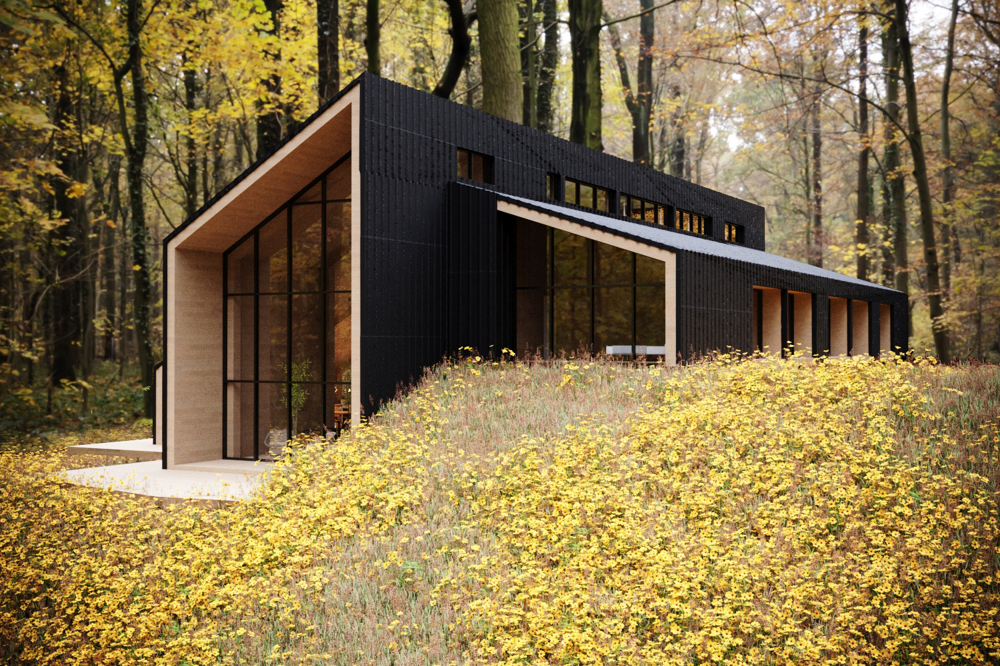
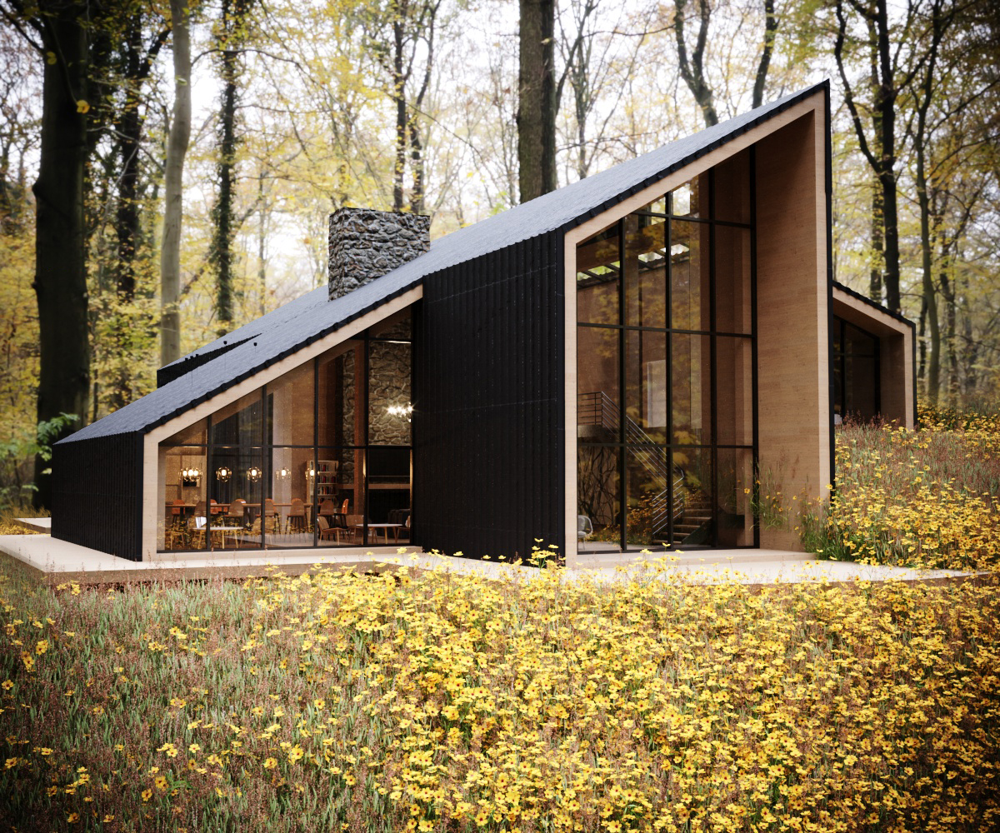
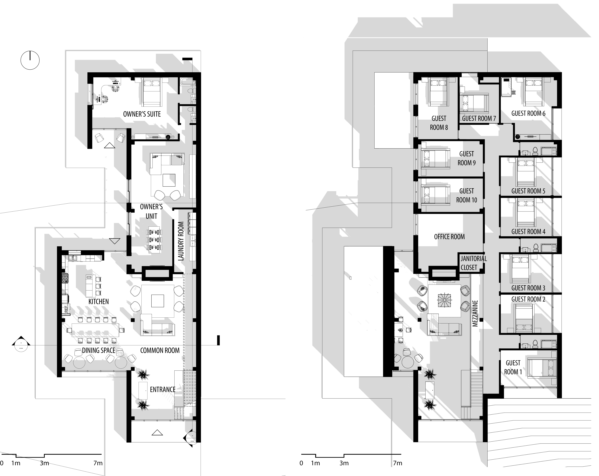


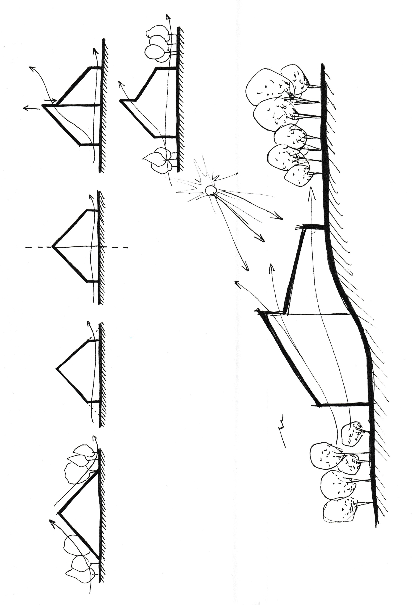
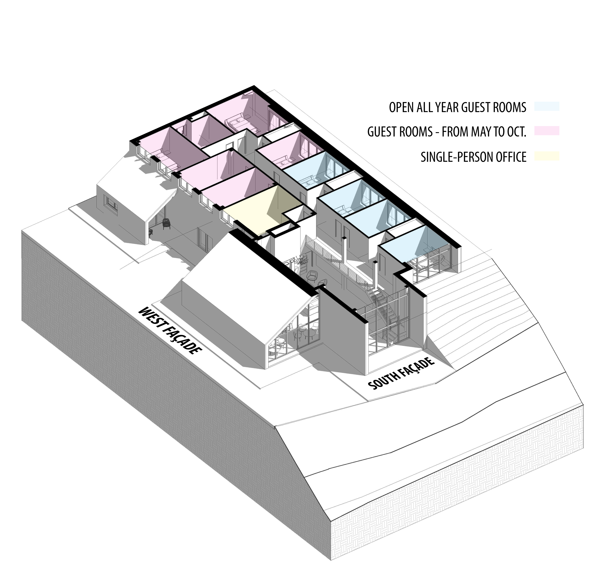
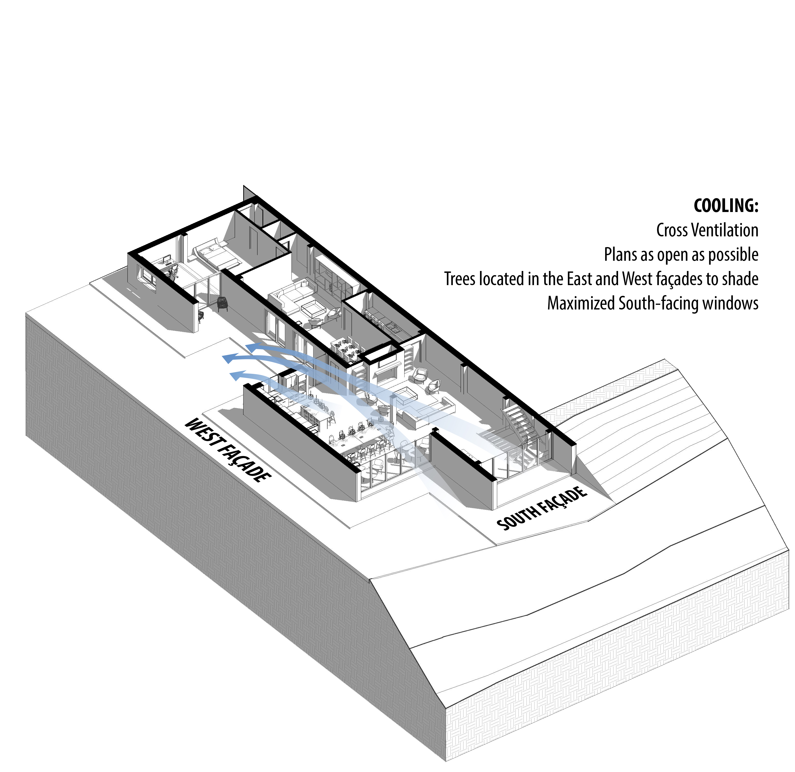
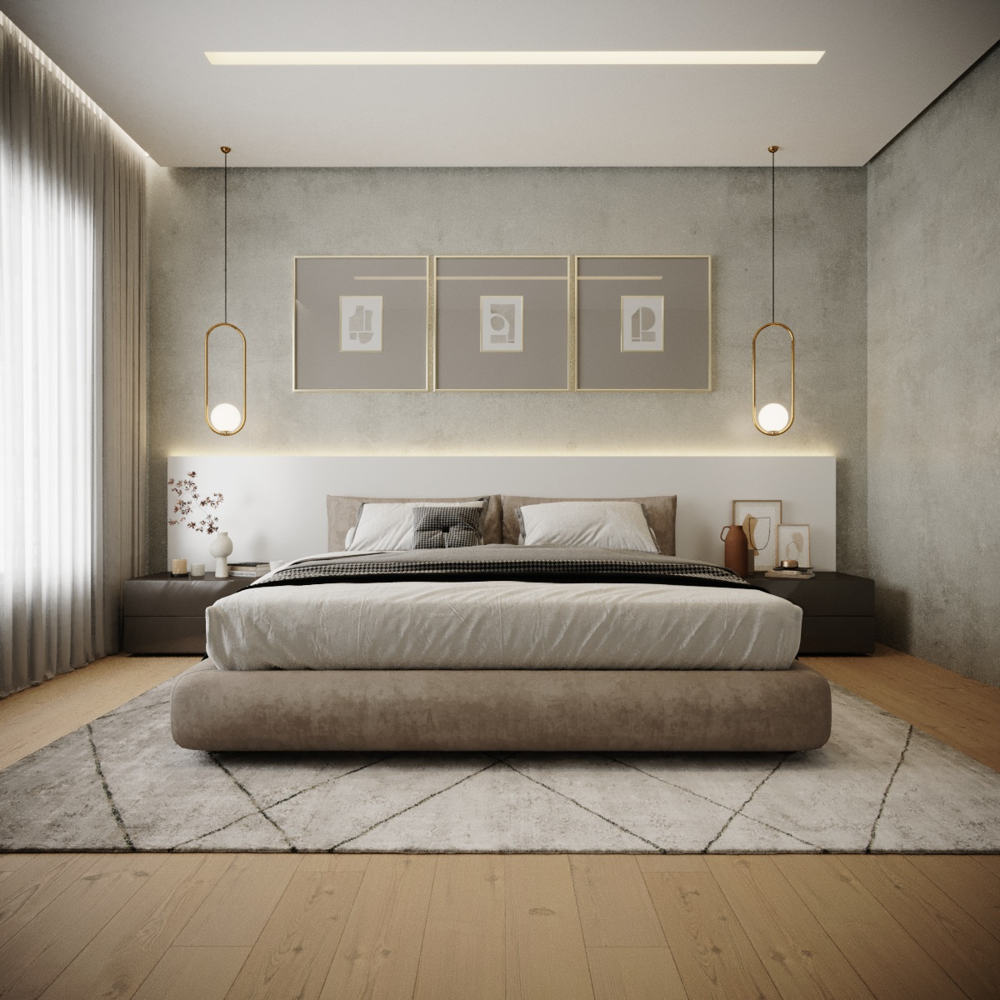
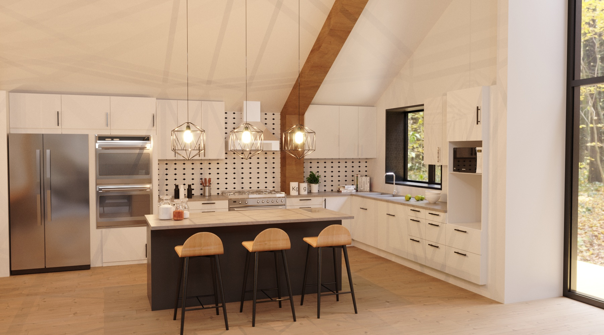
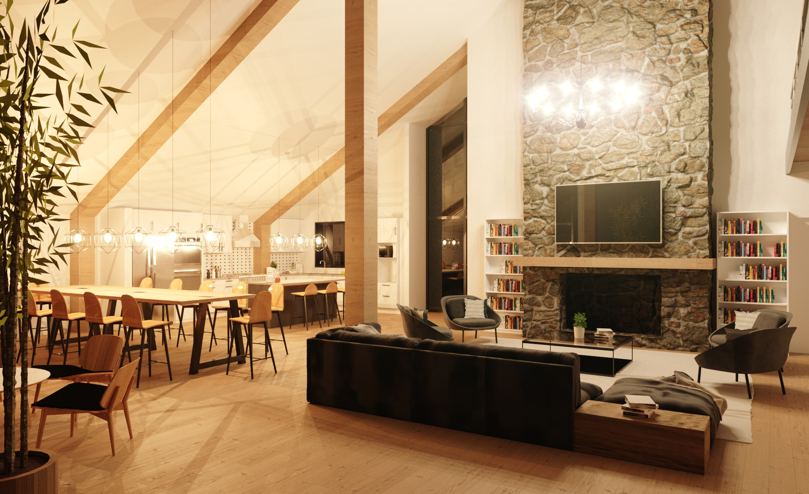
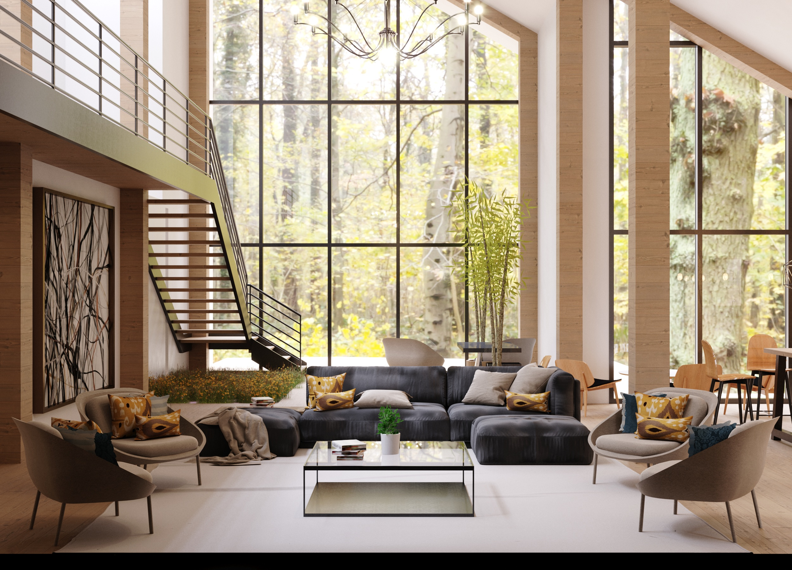
Related projects
Explore adjacent work
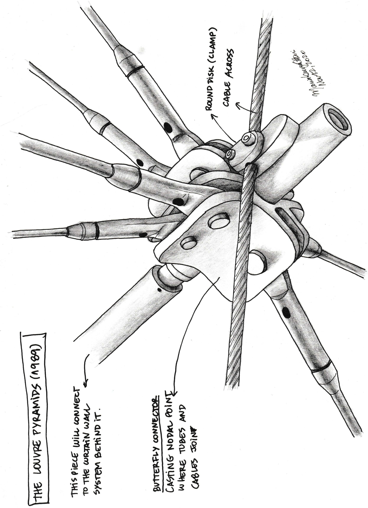
Architecturally Exposed Structural Steel design
Hand-drawing studies exploring landscape-driven architectural proposals through plans, sections, and spatial sequencing.

Denver's Missing Middle
An evolutionary mixed-income townhouse community for Denver's Globeville neighborhood, designed around modular bays, live/work options, and shared outdoor amenities.

Waterloo Centerpiece
A high-density mixed-use district with seven buildings, thirteen towers, pedestrian-oriented streets, green spaces, and transit connectivity.